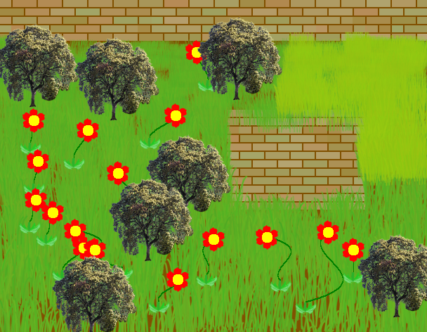

Kian landmarks are famous for their thought and fashon. The different kingdom, the different looks. Dwarves make mining stuff, elves like creativity and humans just make normal statues and so on.
A good landmark to see is the elven war statue in the shape of a bow with and arrow in it ready to fire, another arrow in a evil sword and another in an oga.
Different landmarks represent different things. Like the tower in the human capital city represents that they will watch over the land and help their allies at all costs. The dome in a forest people village shows that thay are agile, brave, fierce and willing to do what is right for their home land.
Kian farms are wonderful entertainment when entering them. They are surroundered by a a brick wall. They grow crops and flowers and trees in them.
